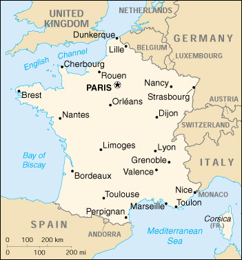

![[Country Flag of France]](../flags/fr-lgflag.jpg)
| France |
|
         |  | |
| Introduction |
Background: Although ultimately a victor in World Wars I and II, France suffered extensive losses in its empire, wealth, manpower, and rank as a dominant nation-state. Since 1958, it has constructed a presidential democracy resistant to the instabilities experienced in earlier parliamentary democracies. In recent years, its reconciliation and cooperation with Germany have proved central to the economic integration of Europe, including the advent of the euro in January 1999. Today, France is at the forefront of European states seeking to exploit the momentum of monetary union to advance the creation of a more unified and capable European defense and security apparatus.
| Geography |
Location: Western Europe, bordering the Bay of Biscay and English Channel, between Belgium and Spain, southeast of the UK; bordering the Mediterranean Sea, between Italy and Spain
Geographic coordinates: 46 00 N, 2 00 E
Map references: Europe
Area:
total:
547,030 sq km
land:
545,630 sq km
water:
1,400 sq km
note:
includes only metropolitan France, but excludes the overseas administrative divisions
Area - comparative: slightly less than twice the size of Colorado
Land boundaries:
total:
2,889 km
border countries:
Andorra 56.6 km, Belgium 620 km, Germany 451 km, Italy 488 km, Luxembourg 73 km, Monaco 4.4 km, Spain 623 km, Switzerland 573 km
Coastline: 3,427 km
Maritime claims:
contiguous zone:
24 nm
continental shelf:
200-m depth or to the depth of exploitation
exclusive economic zone:
200 nm (does not apply to the Mediterranean)
territorial sea:
12 nm
Climate: generally cool winters and mild summers, but mild winters and hot summers along the Mediterranean
Terrain: mostly flat plains or gently rolling hills in north and west; remainder is mountainous, especially Pyrenees in south, Alps in east
Elevation extremes:
lowest point:
Rhone River delta -2 m
highest point:
Mont Blanc 4,807 m
Natural resources: coal, iron ore, bauxite, fish, timber, zinc, potash
Land use:
arable land:
33%
permanent crops:
2%
permanent pastures:
20%
forests and woodland:
27%
other:
18% (1993 est.)
Irrigated land: 16,300 sq km (1995 est.)
Natural hazards: flooding; avalanches
Environment - current issues: some forest damage from acid rain (major forest damage occurred as a result of severe December 1999 windstorm); air pollution from industrial and vehicle emissions; water pollution from urban wastes, agricultural runoff
Environment - international agreements:
party to:
Air Pollution, Air Pollution-Nitrogen Oxides, Air Pollution-Sulphur 85, Air Pollution-Sulphur 94, Air Pollution-Volatile Organic Compounds, Antarctic-Environmental Protocol, Antarctic Treaty, Biodiversity, Climate Change, Desertification, Endangered Species, Hazardous Wastes, Law of the Sea, Marine Dumping, Marine Life Conservation, Ozone Layer Protection, Ship Pollution, Tropical Timber 83, Tropical Timber 94, Wetlands, Whaling
signed, but not ratified:
Air Pollution-Persistent Organic Pollutants, Climate Change-Kyoto Protocol
Geography - note: largest West European nation; occasional strong, cold, dry, north-to-northwesterly wind known as mistral
| People |
Population: 59,329,691 (July 2000 est.)
Age structure:
0-14 years:
19% (male 5,719,502; female 5,448,608)
15-64 years:
65% (male 19,345,269; female 19,322,902)
65 years and over:
16% (male 3,849,783; female 5,643,627) (2000 est.)
Population growth rate: 0.38% (2000 est.)
Birth rate: 12.27 births/1,000 population (2000 est.)
Death rate: 9.14 deaths/1,000 population (2000 est.)
Net migration rate: 0.66 migrant(s)/1,000 population (2000 est.)
Sex ratio:
at birth:
1.05 male(s)/female
under 15 years:
1.05 male(s)/female
15-64 years:
1 male(s)/female
65 years and over:
0.68 male(s)/female
total population:
0.95 male(s)/female (2000 est.)
Infant mortality rate: 4.51 deaths/1,000 live births (2000 est.)
Life expectancy at birth:
total population:
78.76 years
male:
74.85 years
female:
82.89 years (2000 est.)
Total fertility rate: 1.75 children born/woman (2000 est.)
Nationality:
noun:
Frenchman(men), Frenchwoman(women)
adjective:
French
Ethnic groups: Celtic and Latin with Teutonic, Slavic, North African, Indochinese, Basque minorities
Religions: Roman Catholic 90%, Protestant 2%, Jewish 1%, Muslim (North African workers) 1%, unaffiliated 6%
Languages: French 100%, rapidly declining regional dialects and languages (Provencal, Breton, Alsatian, Corsican, Catalan, Basque, Flemish)
Literacy:
definition:
age 15 and over can read and write
total population:
99%
male:
99%
female:
99% (1980 est.)
| Government |
Country name:
conventional long form:
French Republic
conventional short form:
France
local long form:
Republique Francaise
local short form:
France
Data code: FR
Government type: republic
Capital: Paris
Administrative divisions:
22 regions (regions, singular - region); Alsace, Aquitaine, Auvergne, Basse-Normandie, Bourgogne, Bretagne, Centre, Champagne-Ardenne, Corse, Franche-Comte, Haute-Normandie, Ile-de-France, Languedoc-Roussillon, Limousin, Lorraine, Midi-Pyrenees, Nord-Pas-de-Calais, Pays de la Loire, Picardie, Poitou-Charentes, Provence-Alpes-Cote d'Azur, Rhone-Alpes
note:
metropolitan France is divided into 22 regions (including the "territorial collectivity" of Corse or Corsica) and is subdivided into 96 departments; see separate entries for the overseas departments (French Guiana, Guadeloupe, Martinique, Reunion) and the overseas territorial collectivities (Mayotte, Saint Pierre and Miquelon)
Dependent areas:
Bassas da India, Clipperton Island, Europa Island, French Polynesia, French Southern and Antarctic Lands, Glorioso Islands, Juan de Nova Island, New Caledonia, Tromelin Island, Wallis and Futuna
note:
the US does not recognize claims to Antarctica
Independence: 486 (unified by Clovis)
National holiday: National Day, Taking of the Bastille, 14 July (1789)
Constitution: 28 September 1958, amended concerning election of president in 1962, amended to comply with provisions of EC Maastricht Treaty in 1992; amended to tighten immigration laws 1993
Legal system: civil law system with indigenous concepts; review of administrative but not legislative acts
Suffrage: 18 years of age; universal
Executive branch:
chief of state:
President Jacques CHIRAC (since 17 May 1995)
head of government:
Prime Minister Lionel JOSPIN (since 3 June 1997)
cabinet:
Council of Ministers appointed by the president on the suggestion of the prime minister
elections:
president elected by popular vote for a seven-year term; election last held 23 April and 7 May 1995 (next to be held by May 2002); prime minister nominated by the National Assembly majority and appointed by the president
election results:
Jacques CHIRAC elected president; percent of vote, second ballot - Jacques CHIRAC (RPR) 52.64%, Lionel JOSPIN (PS) 47.36%
Legislative branch:
bicameral Parliament or Parlement consists of the Senate or Senat (321 seats - 296 for metropolitan France, 13 for overseas departments and territories, and 12 for French nationals abroad; members are indirectly elected by an electoral college to serve nine-year terms; elected by thirds every three years) and the National Assembly or Assemblee Nationale (577 seats; members are elected by popular vote under a single-member majoritarian system to serve five-year terms)
elections:
Senate - last held 27 September 1998 (next to be held September 2001); National Assembly - last held 25 May-1 June 1997 (next to be held NA May 2002)
election results:
Senate - percent of vote by party - NA; seats by party - RPR 99, UDC 52, DL 47, PS 78, PCF 16, other 29; National Assembly - percent of vote by party - NA; seats by party - PS 245, RPR 140, UDF 109, PCF 37, PRS 13, MEI 8, MDC 7, LDI-MPF 1, FN 1, various left 9, various right 7
Judicial branch: Supreme Court of Appeals or Cour de Cassation, judges are appointed by the president from nominations of the High Council of the Judiciary; Constitutional Council or Conseil Constitutionnel, three members appointed by the president, three members appointed by the president of the National Assembly, and three appointed by the president of the Senate; Council of State or Conseil d'Etat
Political parties and leaders: Citizens Movement or MdC [Jean Pierre CHEVENEMENT]; Democratic Force or FD [leader NA]; Ecology Gereration or GE [Brice LALONDE]; French Communist Party or PCF [Robert HUE]; Independent Ecological Movement or MEI [Jenevieve ANDUEZA]; Left Radical Party or PRG (previously Radical Socialist Party or PRS and the Left Radical Movement or MRG) [Jean-Michel BAYLET]; Liberal Democracy or DL (originally Republican Party or PR) [Alain MADELIN]; Movement for France or LDI-MPF [Philippe DEVILLIERS]; National Center of Independents and Peasants or CNIP [Jean PERRIN]; National Front or FN [Jean-Marie LE PEN]; National Front-National Movement [Bruno MEGRET]; Popular Party for French Democracy or PPDF [Herve de CHARETTE]; Radical Party or RRRS [Thierry CORNILLET]; Rally for the Republic or RPR [Michelle ALLIOT-MARIE]; Reformers' Movement or MR [Jean-Pierre SOISSON]; Socialist Party or PS [Francois HOLLANDE]; The Greens (Les Verts) [Jean-Luc BENNAHMIAS]; The Right (La Droite) [Charles MILLON]; Union for French Democracy or UDF (coalition of UDC, FD, RRRS, PPDF) [Francois LEOTARD]; Union of the Center or UDC [leader NA]
Political pressure groups and leaders: Communist-controlled labor union (Confederation Generale du Travail) or CGT, nearly 2.4 million members (claimed); independent labor union or Force Ouvriere, 1 million members (est.); independent white-collar union or Confederation Generale des Cadres, 340,000 members (claimed); National Council of French Employers (Conseil National du Patronat Francais) or CNPF or Patronat; Socialist-leaning labor union (Confederation Francaise Democratique du Travail) or CFDT, about 800,000 members (est.)
International organization participation: ACCT, AfDB, AsDB, Australia Group, BDEAC, BIS, CCC, CDB (non-regional), CE, CERN, EAPC, EBRD, ECA (associate), ECE, ECLAC, EIB, EMU, ESA, ESCAP, EU, FAO, FZ, G- 5, G- 7, G-10, IADB, IAEA, IBRD, ICAO, ICC, ICFTU, ICRM, IDA, IEA, IFAD, IFC, IFRCS, IHO, ILO, IMF, IMO, Inmarsat, InOC, Intelsat, Interpol, IOC, IOM, ISO, ITU, MINURSO, MIPONUH, MONUC, NAM (guest), NATO, NEA, NSG, OAS (observer), OECD, OPCW, OSCE, PCA, SPC, UN, UN Security Council, UNCTAD, UNESCO, UNHCR, UNIDO, UNIFIL, UNIKOM, UNITAR, UNMIBH, UNMIK, UNOMIG, UNRWA, UNTSO, UNU, UPU, WADB (nonregional), WCL, WEU, WFTU, WHO, WIPO, WMO, WToO, WTrO, ZC
Diplomatic representation in the US:
chief of mission:
Ambassador Francois V. BUJON DE L'ESTANG
chancery:
4101 Reservoir Road NW, Washington, DC 20007
telephone:
[1] (202) 944-6000
FAX:
[1] (202) 944-6166
consulate(s) general:
Atlanta, Boston, Chicago, Houston, Los Angeles, Miami, New Orleans, New York, and San Francisco
Diplomatic representation from the US:
chief of mission:
Ambassador Felix G. ROHATYN
embassy:
2 Avenue Gabriel, 75382 Paris Cedex 08
mailing address:
PSC 116, APO AE 09777
telephone:
[33] (1) 43-12-22-22
FAX:
[33] (1) 42 66 97 83
consulate(s) general:
Marseille, Strasbourg
Flag description: three equal vertical bands of blue (hoist side), white, and red; known as the French Tricouleur (Tricolor); the design and colors are similar to a number of other flags, including those of Belgium, Chad, Ireland, Cote d'Ivoire, and Luxembourg; the official flag for all French dependent areas
| Economy |
Economy - overview: France's economy combines modern capitalistic methods with extensive, but declining, government intervention. The government retains considerable influence over key segments of each sector, with majority ownership of railway, electricity, aircraft, and telecommunication firms. It has been gradually relaxing its control over these sectors since the early 1990s. The government is slowly selling off holdings in France Telecom, in Air France, and in the insurance, banking, and defense industries. Meanwhile, large tracts of fertile land, the application of modern technology, and subsidies have combined to make France the leading agricultural producer in Western Europe. Persistently high unemployment will continue to pose a major problem for the government; a 35-hour work week is being introduced. France has shied away from cutting exceptionally generous social welfare benefits or the enormous state bureaucracy, preferring to pare defense spending and raise taxes to keep the deficit down. France joined 10 other EU members to launch the euro on 1 January 1999.
GDP: purchasing power parity - $1.373 trillion (1999 est.)
GDP - real growth rate: 2.7% (1999 est.)
GDP - per capita: purchasing power parity - $23,300 (1999 est.)
GDP - composition by sector:
agriculture:
3.3%
industry:
26.1%
services:
70.6% (1998)
Population below poverty line: NA%
Household income or consumption by percentage share:
lowest 10%:
2.5%
highest 10%:
24.9% (1989)
Inflation rate (consumer prices): 0.5% (1999 est.)
Labor force: 25.4 million (1994)
Labor force - by occupation: services 69%, industry 26%, agriculture 5% (1995)
Unemployment rate: 11% (1999 est.)
Budget:
revenues:
$325 billion
expenditures:
$360 billion, including capital expenditures of $NA (1999 est.)
Industries: steel, machinery, chemicals, automobiles, metallurgy, aircraft, electronics, mining; textiles, food processing; tourism
Industrial production growth rate: 2% (1999 est.)
Electricity - production: 480.972 billion kWh (1998)
Electricity - production by source:
fossil fuel:
10.77%
hydro:
12.45%
nuclear:
76.24%
other:
0.54% (1998)
Electricity - consumption: 389.254 billion kWh (1998)
Electricity - exports: 62 billion kWh (1998)
Electricity - imports: 3.95 billion kWh (1998)
Agriculture - products: wheat, cereals, sugar beets, potatoes, wine grapes; beef, dairy products; fish
Exports: $304.7 billion (f.o.b., 1999)
Exports - commodities: machinery and transportation equipment, chemicals, iron and steel products; agricultural products, textiles and clothing
Exports - partners: EU 63% (Germany 16%, UK 10%, Italy 9%, Spain 9%, Belgium-Luxembourg 8%), US 7% (1998)
Imports: $280.8 billion (f.o.b., 1999)
Imports - commodities: crude oil, machinery and equipment, chemicals; agricultural products
Imports - partners: EU 62% (Germany 17%, Italy 10%, Belgium-Luxembourg 8%, UK 8%, Spain 7%), US 9% (1998)
Debt - external: $117.6 billion (1996 est.)
Economic aid - donor: ODA, $6.3 billion (1997)
Currency: 1 French franc (F) = 100 centimes
Exchange rates:
euros per US$1 - 0.9867 (January 2000), 0.9386 (1999); French francs (F) per US$1 - 5.65 (January 1999), 5.8995 (1998), 5.8367 (1997), 5.1155 (1996), 4.9915 (1995)
note:
on 1 January 1999, the EU introduced a common currency that is now being used by financial institutions in some member countries at a fixed rate of 6.55957 French francs per euro; the euro will replace the local currency in consenting countries for all transactions in 2002
Fiscal year: calendar year
| Communications |
Telephones - main lines in use: 34.86 million (yearend 1998)
Telephones - mobile cellular: 11.078 million (yearend 1998)
Telephone system:
highly developed
domestic:
extensive cable and microwave radio relay; extensive introduction of fiber-optic cable; domestic satellite system
international:
satellite earth stations - 2 Intelsat (with total of 5 antennas - 2 for Indian Ocean and 3 for Atlantic Ocean), NA Eutelsat, 1 Inmarsat (Atlantic Ocean region); HF radiotelephone communications with more than 20 countries
Radio broadcast stations: AM 41, FM about 3,500 (this figure is an approximation and includes many repeaters), shortwave 2 (1998)
Radios: 55.3 million (1997)
Television broadcast stations: 574 (plus 9,634 repeaters) (1995)
Televisions: 34.8 million (1997)
Internet Service Providers (ISPs): 128 (1999)
| Transportation |
Railways:
total:
31,939 km (31,940 km are operated by French National Railways (SNCF); 14,176 km of SNCF routes are electrified and 12,132 km are double- or multiple-tracked)
standard gauge:
31,840 km 1.435-m gauge
narrow gauge:
99 km 1.000-m gauge (1998)
Highways:
total:
893,300 km
paved:
893,300 km (including 10,300 km of expressways)
unpaved:
0 km (1998 est.)
Waterways: 14,932 km; 6,969 km heavily traveled
Pipelines: crude oil 3,059 km; petroleum products 4,487 km; natural gas 24,746 km
Ports and harbors: Bordeaux, Boulogne, Cherbourg, Dijon, Dunkerque, La Pallice, Le Havre, Lyon, Marseille, Mullhouse, Nantes, Paris, Rouen, Saint Nazaire, Saint Malo, Strasbourg
Merchant marine:
total:
55 ships (1,000 GRT or over) totaling 1,155,286 GRT/1,693,030 DWT
ships by type:
bulk 3, cargo 5, chemical tanker 6, combination bulk 1, container 5, liquified gas 4, multi-functional large load carrier 1, passenger 3, petroleum tanker 16, roll-on/roll-off 6, short-sea passenger 4, specialized tanker 1 (1999 est.)
note:
France also maintains a captive register for French-owned ships in Iles Kerguelen (French Southern and Antarctic Lands) (1998 est.)
Airports: 474 (1999 est.)
Airports - with paved runways:
total:
267
over 3,047 m:
14
2,438 to 3,047 m:
30
1,524 to 2,437 m:
92
914 to 1,523 m:
74
under 914 m:
57 (1999 est.)
Airports - with unpaved runways:
total:
207
1,524 to 2,437 m:
4
914 to 1,523 m:
76
under 914 m:
127 (1999 est.)
Heliports: 3 (1999 est.)
| Military |
Military branches: Army (includes Marines), Navy (includes Naval Air), Air Force (includes Air Defense), National Gendarmerie
Military manpower - military age: 18 years of age
Military manpower - availability:
males age 15-49:
14,619,317 (2000 est.)
Military manpower - fit for military service:
males age 15-49:
12,167,421 (2000 est.)
Military manpower - reaching military age annually:
males:
402,987 (2000 est.)
Military expenditures - dollar figure: $39.831 billion (FY97)
Military expenditures - percent of GDP: 2.5% (FY97)
| Transnational Issues |
Disputes - international: Madagascar claims Bassas da India, Europa Island, Glorioso Islands, Juan de Nova Island, and Tromelin Island; Comoros claims Mayotte; Mauritius claims Tromelin Island; territorial dispute between Suriname and French Guiana; territorial claim in Antarctica (Adelie Land); Matthew and Hunter Islands east of New Caledonia claimed by France and Vanuatu
Illicit drugs: transshipment point for and consumer of South American cocaine and Southwest Asian heroin